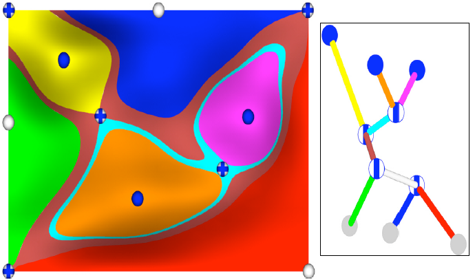
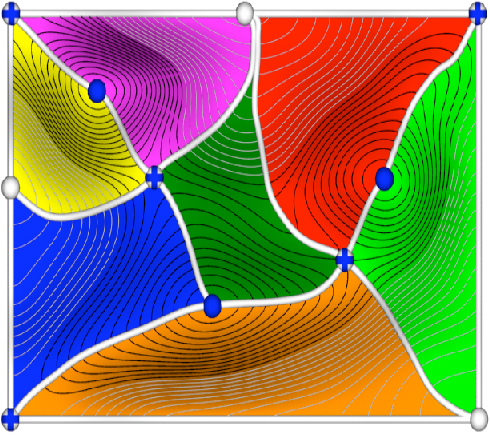
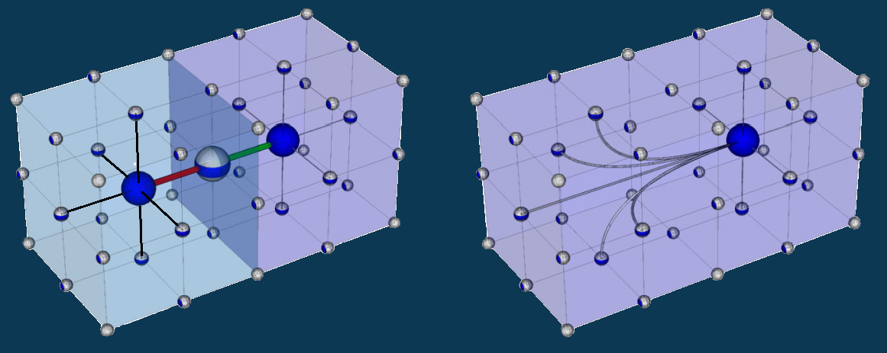

"A practical approach to Morse-Smale Complex computation: scalability and generality" - A. Gyulassy, P.-T. Bremer, B. Hamann, V. Pascucci, 2008
Scalable description of scalar fields
Applications: visualization (isosurfaces, volume rendering, ...)
Disciplines: medical imaging, meteorology, chemistry, physics, ...
Chmutov surface
Geometry-oriented simplification
Topology-oriented simplification
 Reeb graphs
 Morse-Smale complexes
Results using a regular computer (2GB RAM, Athlon 2.2GHz):
> 2 million cells: 47s (vs 27s)
> 17 million cells: 5m (vs 4m)
> 1 billion cells: 23h (unattained)
The most time is spent on cancellations
Parallelization
Adapt to dynamic problems (where the function evolves)
Persistance cancellation
Distance? Operate it on each parcel first?
Error and order of cancellations
Geometrical simplifications for CW-complexes
d-cells in higher dimension
